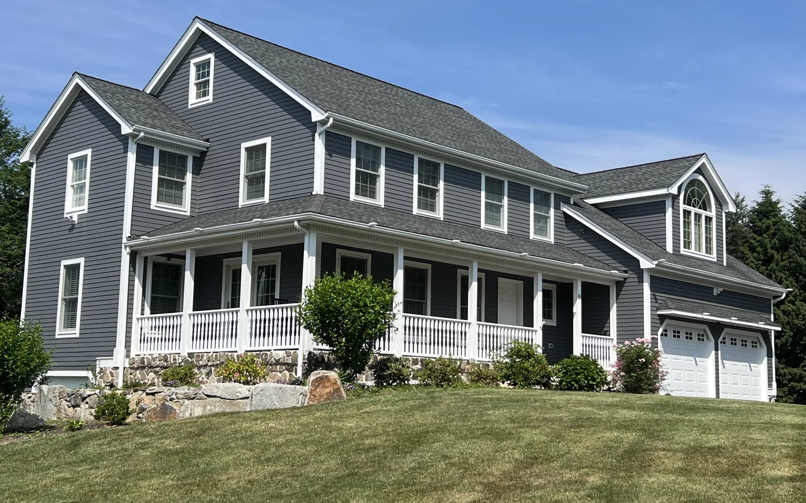
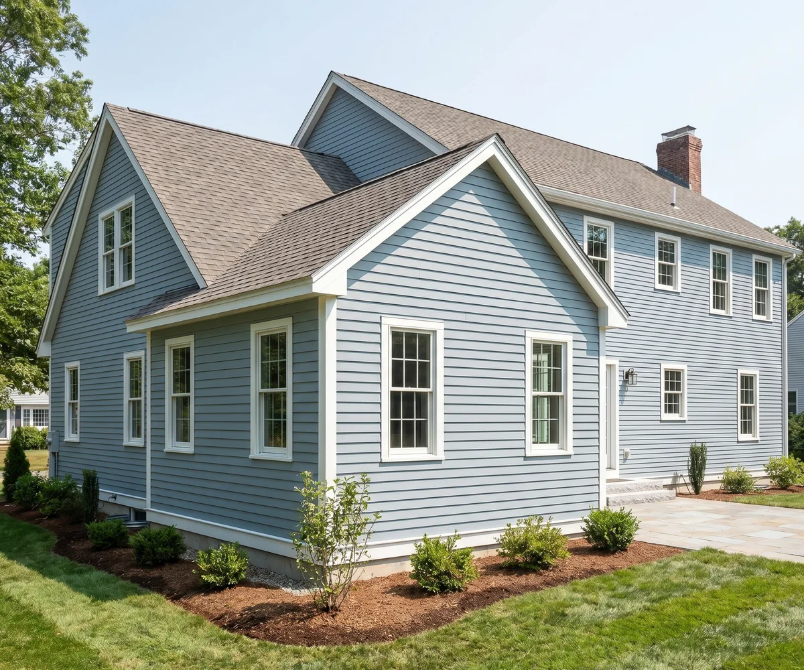
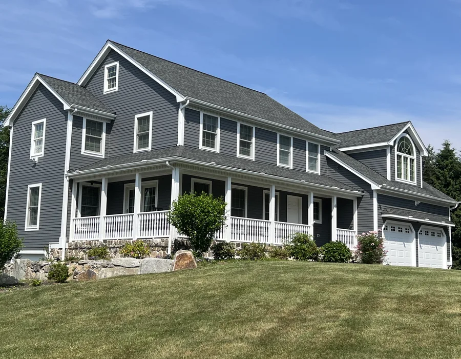

Beverly home addition contractors
Beverly home addition contractors for space that feels original to the home
A home addition in Beverly has to solve the space problem without feeling bolted on. DeFaria Construction helps homeowners think through structure, flow, access and finish continuity before construction begins.
Local search focus
Beverly additions need planning around the home that already exists.
Room additions, garage additions and expanded living areas should consider roofline, exterior transitions, interior circulation, access and how the new space will be used. In Beverly, that planning can change by neighborhood, lot size and the age of the home.
This page supports searches around Beverly Farms, Prides Crossing, Ryal Side, North Beverly, Montserrat and Downtown Beverly where homeowners need more space but do not want the addition to feel disconnected from the original home.
- Clear estimate conversations before the project starts.
- Direct communication with homeowners and business owners.
- Local coverage across Essex County and Middlesex County.
Areas covered
A local addition page should help homeowners compare fit, not just price.
This page supports Beverly home addition contractors searches and related local intent. It gives visitors enough context to decide whether DeFaria Construction is relevant before they call.
- Beverly Farms
- Prides Crossing
- Ryal Side
- North Beverly
- Montserrat
- Centerville
- Downtown Beverly
Project photos
Home addition photos for Beverly projects
Addition pages need proof of structure and finish continuity because visitors are deciding whether the contractor can make new space feel intentional.



Experience
Why this page is built for real visitors, not just keywords.
DeFaria Construction is a local construction and remodeling company serving homeowners and business owners in Massachusetts. The company records show direct owner involvement from Luiz DeFaria and BBB credibility as part of the trust stack, so the page is written around project clarity, service area fit and practical next steps instead of repeating a city name without value.
The goal is to help someone searching for Beverly home addition contractors understand the type of work, the local areas covered and how to start a direct conversation with the contractor before requesting an estimate.
Request an estimateFAQ
Common questions about Beverly home addition contractors
What types of home additions can be planned in Beverly?
Common addition conversations include room additions, garage additions, expanded living areas, primary suite additions and layout changes that create more usable space.
What should be discussed before pricing a Beverly home addition?
The planning conversation should cover use of the new space, access, structural transitions, finish continuity, exterior tie-ins and any permit or inspection considerations.
Why make a Beverly addition page?
Home addition searches are high intent and local. A dedicated Beverly page helps homeowners see that the service applies to their area and connects them to related remodeling pages.